2023-01-16
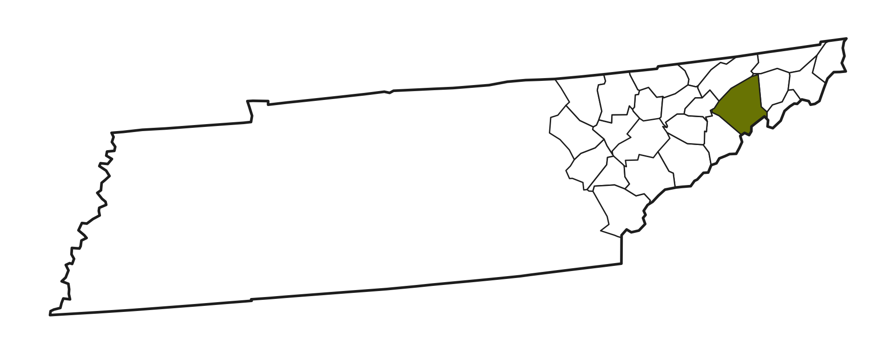
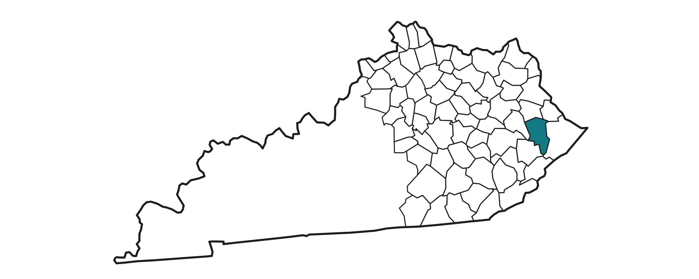
identify, examine, and address spatial inequities in learning opportunities
Critical spatial theory1 calls for the interrogation of:
“the intersections of space, power, and knowledge in order to expose geographies that perpetuate or disrupt inequities in both processes and outcomes” 2
Learning Ecosystem Health1
Indicator
Keystone
Learning Ecosystem Health1
STUDY I
Spatial Inequities in Secondary Course Availability
[Student Learning]
Please Do Not Circulate or Cite
What is the geographic landscape of advanced secondary course availability in U.S. public schools?
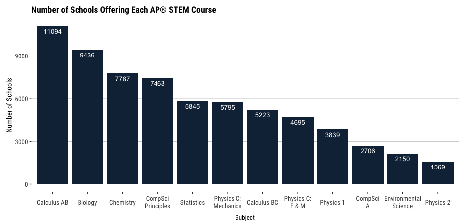
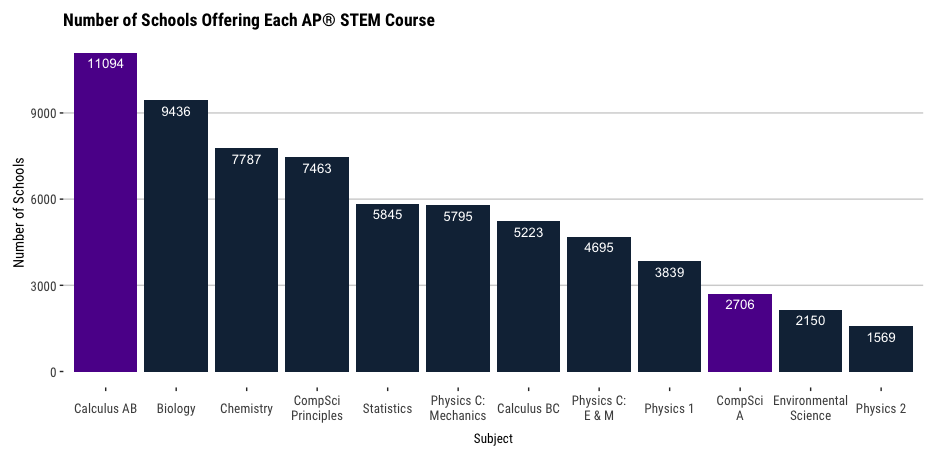
Please Do Not Circulate or Cite
Please Do Not Circulate or Cite
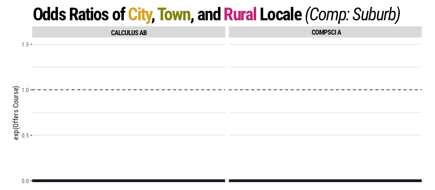
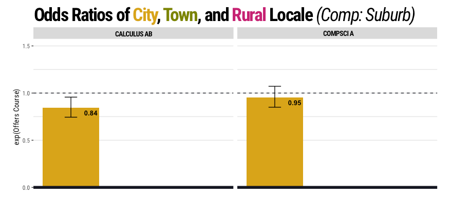
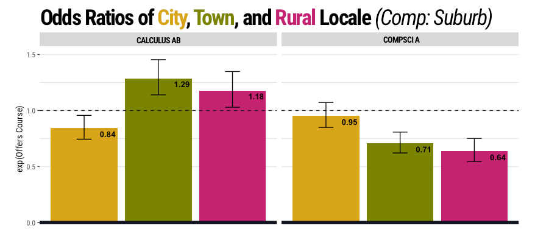
Please Do Not Circulate or Cite
Residuals from Logit Models
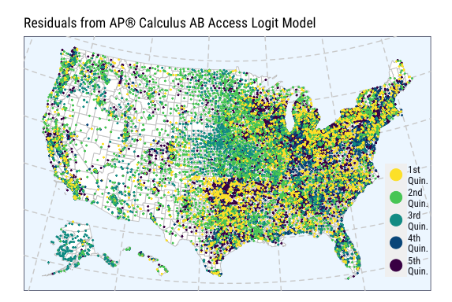AP® Calculus AB
\[I = .220 , p < .001\]
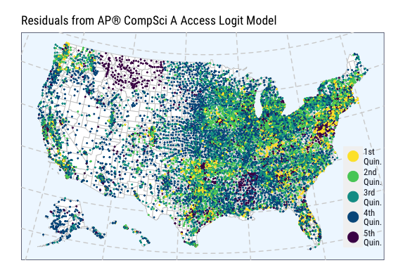AP® Computer Science A
\[I = .262 , p < .001\]
Please Do Not Circulate or Cite
Locale Coefficients — Odds Ratios
AP® Calculus AB
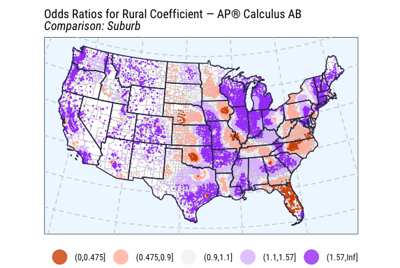
AP® Computer Science A
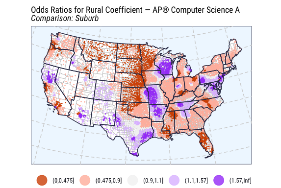
Please Do Not Circulate or Cite
–>
–>
–>
–>
Please Do Not Circulate or Cite
STUDY II
Local Secondary Teacher Learning Ecologies
[Teacher Learning = Keystone Study]
Teachers learn from four spheres — interpersonal, institutional, community, and policy1
Learning partners and distributed resources2 comprise teachers’ learning ecologies:
the accessed set of contexts, comprised of configurations of activities, material resources and relationships, found in co-located physical or virtual spaces that provide opportunities for learning (Barron, 2004, p.6)3
What expertise resources characterize advanced secondary teachers’ professional content-based learning ecologies?
How and to what extent do their ecologies vary based on community locale and context?
| AP® Bio | AP® Calc AB/BC | AP® Chem | AP® CompSciA | AP® CompSciPr | AP® EnvSci | AP® Physics C | AP® Physics 1&2 | AP® Stat | |
|---|---|---|---|---|---|---|---|---|---|
| City | 3 | 2 | 1 | 2 | 0 | 3 | 3 | 2 | 2 |
| Suburb | 0 | 2 | 3 | 0 | 1 | 1 | 0 | 1 | 1 |
| Town | 2 | 1 | 6 | 1 | 2 | 0 | 3 | 1 | 3 |
| Rural | 0 | 2 | 1 | 0 | 2 | 0 | 1 | 0 | 1 |
| PLTW® Engineering | PLTW® Biomedical Science | PLTW® Computer Science | |
|---|---|---|---|
| City | 2 | 0 | 2 |
| Suburb | 2 | 2 | 0 |
| Town | 2 | 1 | 0 |
| Rural | 0 | 2 | 0 |
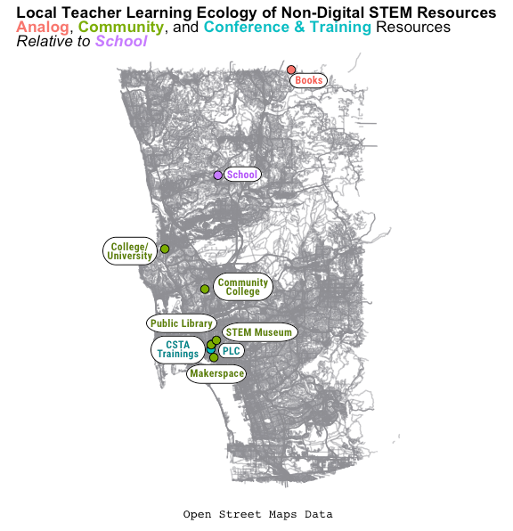
AP® Computer Science A City-Located | Doug
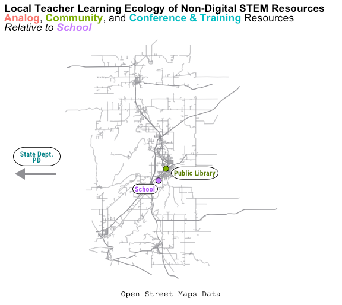
PLTW® Biomedical Science Town-Located | Melissa
THANK YOU
{kind=link}